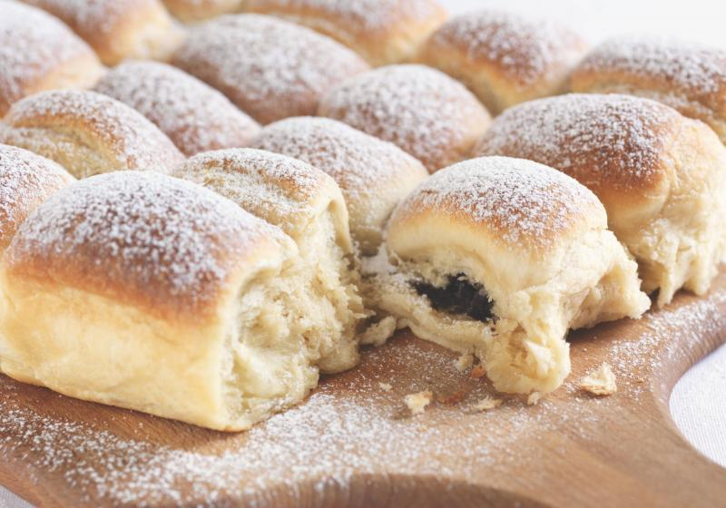

Tradiční české buchty
Množství: cca 12 buchet
Čas: 1 hodina + kynutí
Ingredience:
- 200 g hladké mouky
- 200 g polohrubé mouky
- 250 ml mléka
- 25 g droždí
- 1 lžička cukru
- 1 vejce
- 50 g rozpuštěného másla
- špetka soli
- olej
- marmeláda/povidla/tvaroh
Postup:
- Ve vlažném a oslazeném mléce necháme vzejít kvasnice. Vykynutý kvásek v míse smícháme s moukou, solí, rozpuštěným máslem a vejcem. Vypracujeme těsto, které se nelepí na stěny mísy a necháme na teplém místě vykynout.
- Asi po 20 minutách těsto přemícháme a necháme znovu kynout.
- Na pomoučeném vále pak těsto rozdělíme asi na 12-15 hromádek (podle toho, jakou má každý rád velikost buchet), které roztáhneme a doprostřed dáme kopeček marmelády. Opatrně uzavřeme a klademe na vymazaný plech, každou buchtu pomažeme olejem, hlavně z boku a necháme ještě aspoň 10 minut odpočinout.
- Upečené buchty na talíři pocukrujeme.